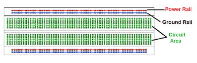
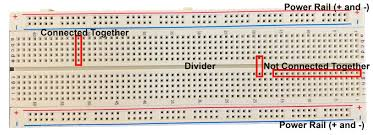

Arduino Guide
A visual, offline-friendly way to learn Arduino.
Arduino Guide is a community-driven project designed to explain Arduino in a simple and visual way. No boring theory — only real examples, wiring, and code.
This site is built for beginners and self-learners who want to understand electronics by actually seeing how things connect.
Instead of reading long manuals, you learn by clicking, exploring, and understanding both hardware and code at the same time.
The guide focuses on clarity, speed, and simplicity. Everything runs in a single lightweight website that works offline and even on older computers.
LEDs (Light Emitting Diodes)
LEDs are semiconductor devices that emit light when an electric current passes through them. Invented in the early 1960s, LEDs later revolutionized lighting and display technology thanks to their efficiency, long lifespan, and small size.
History
The first visible-spectrum LED was created in 1962 by Nick Holonyak Jr., often called the “father of the LED.” Early LEDs produced only red light and were used mainly as indicator lamps. Over time, new materials allowed LEDs to emit many colors, including white, making them suitable for lighting, displays, and communication systems.
How LEDs Work
An LED allows current to flow in only one direction — from the positive anode (longer leg) to the negative cathode (shorter leg). When electrons recombine with holes inside the semiconductor, energy is released as light (photons).
Image source: BYJU’S
Usage and Applications
- Indicator lights in electronics
- Displays and screens
- Lighting (homes, streetlights, automotive)
- Optical communication
- Decorative and wearable technology
Important Tips
- Polarity matters: The longer leg is the anode (+) and the shorter leg is the cathode (−). Reversing them will prevent the LED from lighting.
- Always use a resistor: LEDs must have a current-limiting resistor in series to avoid damage.
- Common ground: Multiple LEDs can share the same GND, but avoid connecting too many high-current devices to one pin.
- Calculate resistor values: Use Ohm’s law based on supply voltage and LED forward voltage/current.
Common Mistakes
- Connecting LEDs without resistors (burns them out)
- Reversing polarity (LED will not light)
- Connecting too many devices to a single GND line
The longer leg of an LED is the (+) anode.
The shorter leg is the (−) cathode and should be connected to Arduino GND.
You may connect multiple negative ends to one GND pin, but do not power all motors, displays, and LEDs from the same GND line.
Resistors
Resistors are passive electrical components that limit and control the flow of current in a circuit. They protect sensitive components and help control voltage and current levels.
History
The concept of resistance comes from Ohm’s Law, discovered in 1827 by Georg Simon Ohm. Since then, resistors have become one of the most important parts of modern electronics.
How Resistors Work
Resistors oppose the flow of electric current and convert excess electrical energy into heat. Their resistance is measured in ohms (Ω). A higher resistance means less current can flow.
Image source: Utmel
Usage and Applications
- Limit current for LEDs and sensors
- Create voltage dividers
- Set bias points in transistors and amplifiers
- Pull-up and pull-down resistors in digital circuits
- Signal conditioning and filtering
Important Tips
- Check the value: Read the color code or use a multimeter.
- Power rating matters: Choose a resistor that can safely handle the heat.
- Use the correct tolerance: Precision circuits need low-tolerance resistors.
- Avoid overheating: Too much current can permanently damage a resistor.
Common Mistakes
- Using the wrong resistance value
- Ignoring the power rating
- Choosing the wrong tolerance
- Wiring resistors incorrectly (series vs. parallel)
Resistors control current and protect components in your circuit.
Always verify resistance values and power ratings before using them.
Capacitors
Capacitors store and release electrical energy in a circuit. They consist of two conductive plates separated by an insulator and are widely used for filtering, timing, and short-term energy storage.
History
The earliest capacitor was the Leyden jar, invented in the 18th century. Modern capacitors became common in the 20th century and helped enable radios, computers, and power electronics.
How Capacitors Work
Capacitors store electrical charge when voltage is applied. They resist sudden changes in voltage, smooth power supplies, block direct current, and allow alternating current to pass.

Image source: aictech-inc.com
Usage and Applications
- Power supply filtering and smoothing
- Timing circuits with resistors
- Signal coupling and decoupling
- Short-term energy storage
- Radio tuning circuits
Important Tips
- Observe polarity: Electrolytic capacitors must be connected correctly.
- Check voltage ratings: Never exceed the rated voltage.
- Choose the right type: Ceramic, electrolytic, and film capacitors serve different roles.
- Discharge before handling: Large capacitors can hold dangerous charge.
Common Mistakes
- Reversing polarity
- Using a capacitor with too low voltage rating
- Not discharging before touching
- Using the wrong capacitor type
Capacitors store energy and stabilize voltage in electronic circuits.
Always check polarity and voltage ratings before connecting them.
Wires
Wires are conductors used to connect components in an electronic circuit. The type and thickness of a wire affect how much current it can safely carry, how flexible it is, and how reliable the connection will be.
History
Copper has been used for electrical wiring since the early days of electricity. Over time, better insulation materials and standardized wire gauges improved safety and efficiency in electronic systems.
How Wires Work
Wires carry electric current between components. The thickness of a wire, called its gauge, determines how much current can flow safely without overheating or causing a voltage drop.
Image source: InterNACHI
Usage and Applications
- Connecting sensors, modules, and power supplies
- Prototyping with breadboards and jumper wires
- Signal transmission in data and audio cables
- Power wiring inside devices and appliances
- Grounding and shielding to reduce electrical noise
Important Tips
- Choose the correct gauge: Thicker wires carry more current safely.
- Use proper insulation: Prevent short circuits and damage.
- Keep wires organized: Color coding helps with debugging.
- Avoid very long runs: Long wires can cause voltage drops.
Common Mistakes
- Using wires that are too thin for the current
- Damaged or missing insulation
- Messy wiring causing confusion and errors
- Loose connections that disconnect easily
Wires are the paths that electricity follows in your circuit.
Always choose the correct gauge and insulation for your project.
Using Arduino Pins in Code
In Arduino, you do not control parts by names like “LED” or “Button”. You control them using pin numbers. Each physical pin on the board has a number that you reference in your code.
How Pin Numbers Work
Arduino boards label pins as: D0–D13 for digital pins and A0–A5 for analog pins. These labels tell the microcontroller which physical pin to use.

Red = Power, Blue = Digital, Purple = Analog
Basic Pin Functions
- pinMode(pin, mode) → Sets a pin as INPUT, OUTPUT, or INPUT_PULLUP
- digitalWrite(pin, value) → Sends HIGH or LOW
- digitalRead(pin) → Reads HIGH or LOW
- analogRead(pin) → Reads values from 0 to 1023
- analogWrite(pin, value) → Outputs PWM from 0 to 255
Example: LED on Pin 13
int led = 13;
void setup() {
pinMode(led, OUTPUT);
}
void loop() {
digitalWrite(led, HIGH); // ON
delay(500);
digitalWrite(led, LOW); // OFF
delay(500);
}
Using Analog Pins
- analogRead(A0) → Reads sensor values
- A4 = SDA → I²C data
- A5 = SCL → I²C clock
- Analog pins can also act as digital pins (A0 = D14)
PWM Pins (~)
Pins with a ~ symbol can simulate analog output using PWM. Use analogWrite() on these pins.
- ~3, ~5, ~6, ~9, ~10, ~11
- Value range: 0–255
Common Mistakes
- Forgetting to use pinMode()
- Using analogRead() on digital-only pins
- Using digitalWrite() on analog-only pins
- Using pins 0 and 1 while uploading code
The pin number in your code must match the physical pin on the board. If the number is wrong, the circuit will not work.
Breadboards
3D BreadboardA breadboard is a reusable prototyping board that allows you to build and test electronic circuits without soldering. It is one of the most important tools for learning electronics and Arduino.
History
The term “breadboard” comes from early electronics hobbyists who literally built circuits on wooden breadboards in the 1970s. Modern breadboards use metal spring clips under the plastic holes to make temporary electrical connections.
How a Breadboard Works
More on HowInside a breadboard, metal strips connect groups of holes together. When you push a wire or component leg into a hole, it electrically connects to all other holes in the same strip.
Power Rails
The long lines on the sides are called power rails. They are usually marked with red (+) and blue (−).
- Red rail → connect to 5V or 3.3V
- Blue rail → connect to GND
- Some breadboards have broken rails in the middle
Center Rows
The middle area is split into two sides. Each row of 5 holes is connected vertically.
- Left side rows are separate from right side
- Used for placing ICs and components
- The center gap holds DIP chips (like microcontrollers)
Usage and Applications
- Testing Arduino projects
- Learning electronics
- Temporary circuit building
- Debugging hardware
- Classroom and hobby projects
Important Tips
- Always connect GND and power rails first
- Use short jumper wires to avoid noise
- Double-check which holes are connected
- Label power rails when using multiple voltages
Common Mistakes
- Assuming all long rails are connected end to end
- Placing both legs of a component in the same row
- Forgetting to connect the ground rail
- Shorting power rails together
Breadboards do not provide power by themselves — they only connect wires. You must supply power from the Arduino or an external source.
How Breadboards Work (In Detail)
A breadboard works by internally connecting holes using hidden metal clips. These clips allow electrical current to flow between connected points without soldering.
Internal Connections
Under the plastic surface, thin metal strips run beneath specific rows and columns. When a wire or component leg is inserted, it is clamped by a metal contact.
Row Connections
In the center area, each row of 5 holes is electrically connected. This allows components like resistors or LEDs to share voltage or signals.
- Connections run vertically
- Left and right sides are isolated
- Center gap separates IC pins
Power Distribution
Power rails distribute voltage across the board. These rails make it easy to supply power to many components.
- Red rail = VCC (5V / 3.3V)
- Blue rail = GND
- Rails may be split in the middle
Why Breadboards Are Safe for Learning
- No soldering required
- Easy to change circuits
- Low risk of permanent damage
- Reusable for thousands of insertions
Limitations
- Not suitable for high current
- Not reliable for high-frequency signals
- Loose wires can cause unstable behavior
Breadboards are designed for testing and learning. Final projects should be soldered to perfboards or PCBs.
Breadboard 3D View
Viewing a breadboard in 3D helps you understand how holes, rails, and internal connections are arranged in physical space.
Rotate and zoom the model to see how components fit, where the center gap is located, and how power rails run along the sides.
What to Look For
- Side power rails
- Center gap for ICs
- Hole alignment
- Component spacing
Learning Tip
Try matching a real breadboard with the 3D model. Insert wires and components while rotating the model to understand how connections form.
Tip: Combine this 3D view with wiring examples to fully understand circuit layout.
How Breadboards Work (Inside)
A breadboard works by connecting holes together using hidden metal clips. These clips clamp wires and component legs to form electrical paths.
Row Connections
- Each row of 5 holes is connected
- Connections run vertically
- Left and right sides are separate
- Center gap isolates IC pins
Power Distribution
- Red rail = VCC
- Blue rail = GND
- Rails may be split
Limitations
- Not for high current
- Not for high frequency
- Loose wires cause errors
Breadboards are for learning. Final projects should be soldered.
Breadboard 3D Model
This interactive 3D model helps you understand how a breadboard is built. Rotate, zoom, and inspect the rails, center gap, and hole layout.
What to Explore
- Side power rails
- Center gap for ICs
- Hole spacing
- Component fit
Learning Tip
Place parts on a real breadboard while rotating the model to understand internal connections.
404 – Page Not Found
The section you tried to open does not exist.